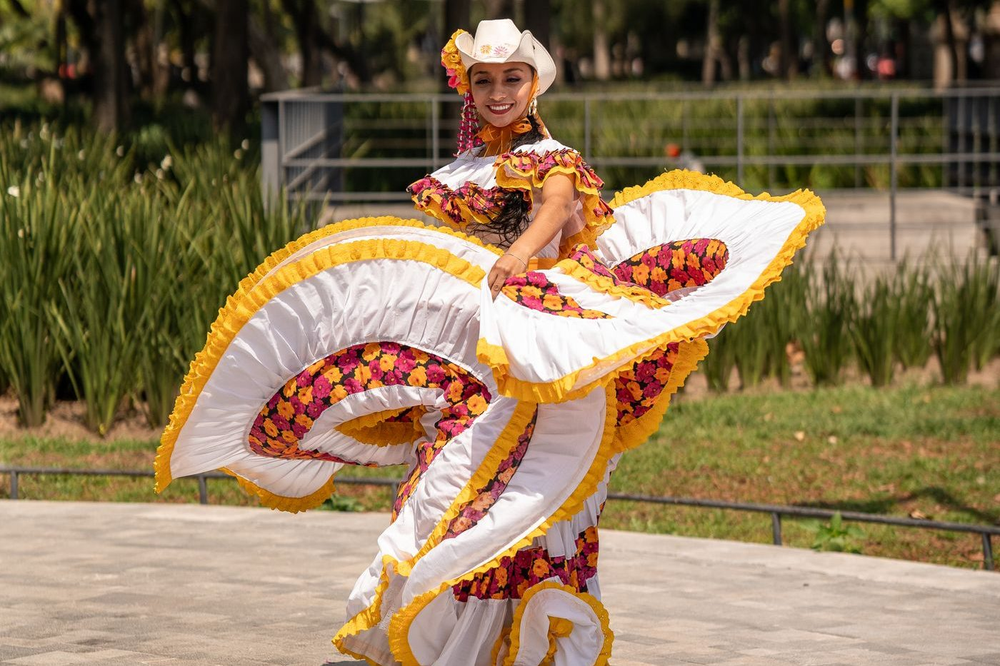
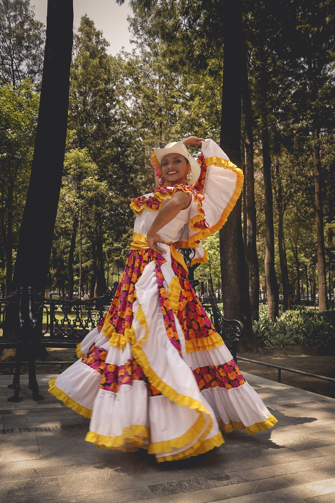
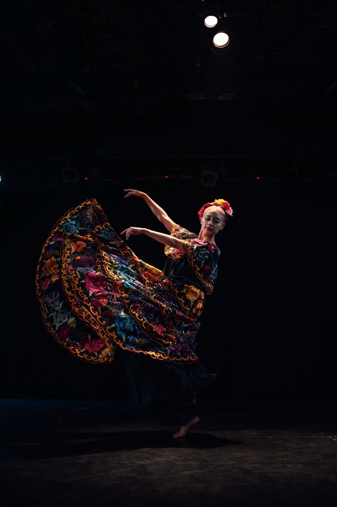

Mexican folk dance classes and performances in Boise
Ballet Folklorico Mexico Lindo teaches Mexican folk dance and performs in the community, including Idaho Hispanic heritage events. No prior dance experience is needed, and all ages are welcome.

Ballet Folklorico Mexico Lindo sits at 4214 W Emerald St in Boise. Director Monique Michel has shared Mexican folk dance in Idaho for 20 years, and Studio Alma Folklorica opened in April 2023.


4214 W Emerald St, Boise, ID
Classes Monday through Thursday, 5:00 PM to 9:00 PM